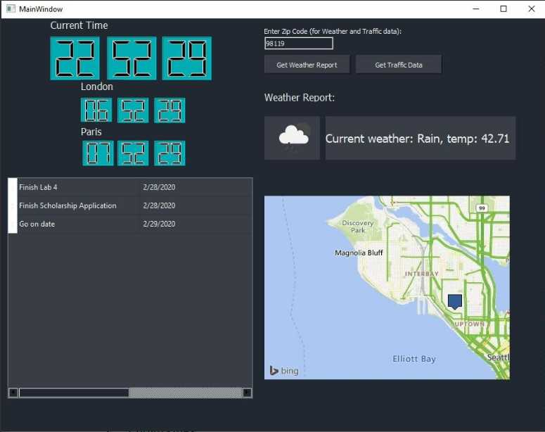

Multifunctional Dashboard
Language: C++
Tool(s): Qt Creator
Skills: Frontend Development, APIs, Database Management

This was a team project completed with Robert Banks for the class Applications Programming at SPU. It included a clock with the ability to view the time of cities in other time zones, weather and traffic data based on ZIP code, and a to-do list viewing window. The to-do list viewer was accomplished by interfacing with a database in the form of a CSV file containing to-do list items with their due dates. The weather/traffic forecast was accomplished by interfacing with the OpenWeatherMap and Bing Map APIs, respectively. The clock functionality was implemented with the QTime class library.